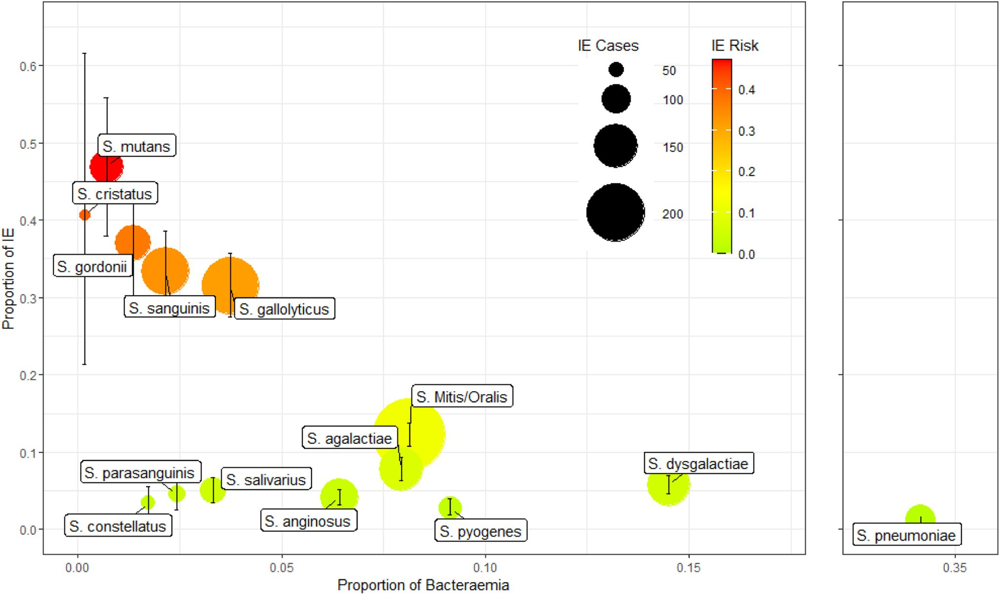

グラム染色 像
No image
分類・特徴
VGS は口腔・消化管・泌尿生殖器に常在する異質性の高い菌群で、感染性心内膜炎の主要原因菌。免疫不全患者では菌血症や膿瘍形成を引き起こす[1]。
- 主要群
-
Mitis 群：S. mitis, S. oralis, S. pneumoniae（分類上 mitis クレード）
Anginosus 群（Milleri 群）：S. anginosus, S. intermedius, S. constellatus
Salivarius 群：S. salivarius, S. vestibularis
Mutans 群：S. mutans, S. sobrinus など
Sanguinis 群：S. sanguinis, S. parasanguinis, S. gordonii
Bovis 群（現 S. gallolyticus）：非腸球菌性の Group D 連鎖球菌[1][2] - 溶血性
- α溶血（緑色調）が多い[1]
- オプトチン
- 非感受性（肺炎球菌との鑑別）[1]
- 常在
- 口腔・消化管・泌尿生殖器[1]
- 同定
- 従来法では困難。MALDI-TOF MS による同定が有用[1]
- 病原性
- 免疫正常者では病原性低い／心臓弁付着能（IE 発症に関与）／Anginosus 群は膿瘍形成傾向が強い（→ 詳細は S. anginosus 群 ページ参照）[1][2]
主な感染症
抗菌薬選択
ペニシリン感受性株（MIC ≤0.12 µg/mL）[6]
- ペニシリンG／セフトリアキソン／アンピシリン／アモキシシリン（第一選択）
- 自己弁 IE：ペニシリンGまたはセフトリアキソン ± ゲンタマイシン 2 週間併用も選択肢
- β-ラクタムアレルギー：バンコマイシン
リネゾリドは静菌的で IE には推奨されない（菌血症のみで IE が除外できれば代替可）。
ペニシリン中等度耐性株（MIC 0.12-2 µg/mL）[6][7]
- ペニシリンG ＋ ゲンタマイシン併用（4 週間）
- セフトリアキソン単剤療法も考慮可能（エビデンスは限定的）
- β-ラクタムアレルギー：バンコマイシン単剤
ペニシリン高度耐性株（MIC ≥4 µg/mL）[6][10]
- 稀だが、ほぼ全例が Mitis 群
- β-ラクタム系（セフトリアキソン・ペニシリン・セフタロリン）＋ ゲンタマイシンまたは他剤併用
- バンコマイシン ＋ ゲンタマイシンも有効
- ダプトマイシン単剤は急速な耐性化リスクのため注意。DAP+CTRX または DAP+セフタロリン併用が有効[10]
耐性パターン[8][9]
- Mitis 群は他の VGS 菌種より多剤耐性傾向。ペニシリン非感受性 28-52%（S. mitis 31%、S. sanguinis 52%）。小児では感受性わずか 23% との報告
- Mitis 群はVCM 100%・LZD 100%・グリコペプチド 100% 感受性。EM 27-35%・CLDM 25-32% 耐性
- Anginosus 群は比較的感受性が保たれている
- 多剤耐性株（β-ラクタム＋EM＋CLDM）が 21.6% 存在
- ペニシリン 1 単位ディスクスクリーニングは耐性株 21% を見逃すため信頼性が低い → 正確な菌種同定と MIC 測定が必須
治療期間[6]
- 自己弁 IE：通常 4 週間以上
- 人工弁 IE：通常 6 週間以上
- ゲンタマイシン併用は腎毒性・耳毒性のため2 週間に制限
参考：S. mutans 群[11]
- 主に齲歯（う蝕）の主要病原菌で、IE 原因菌としても重要
- 第一選択：ペニシリン系（ペニシリン・アンピシリン・アモキシシリン）に高感受性（MIC ≤0.08 μg/mL）
- 代替：エリスロマイシン高感受性／セファロスポリン系／VCM／テトラサイクリン／モキシフロキサシン
- クリンダマイシン耐性率が最も高い（59.4%）— 第一選択としては推奨されない
連鎖球菌の IE リスク評価
連鎖球菌菌血症ではどの種で IE 精査（TTE / TEE）が必要かを評価する必要がある。下図は IE リスクの高い連鎖球菌種の鑑別フロー（院内 ID/ICU 学習資料より）。

出典
- Doern CD, Burnham CA. It's Not Easy Being Green: The Viridans Group Streptococci, with a Focus on Pediatric Clinical Manifestations. J Clin Microbiol 2010;48(11):3829-35.
- McLean AR, Torres-Morales J, Dewhirst FE, Borisy GG, Mark Welch JL. Site-Tropism of Streptococci in the Oral Microbiome. Mol Oral Microbiol 2022;37(6):229-243.
- Kim SL, Gordon SM, Shrestha NK. Distribution of Streptococcal Groups Causing Infective Endocarditis: A Descriptive Study. Diagn Microbiol Infect Dis 2018;91(3):269-272.
- Chambers HF, Bayer AS. Native-Valve Infective Endocarditis. NEJM 2020;383(6):567-576.
- Su TY, Lee MH, Huang CT, Liu TP, Lu JJ. The Clinical Impact of Patients with Bloodstream Infection with Different Groups of Viridans Group Streptococci by Using Matrix-Assisted Laser Desorption Ionization-Time of Flight Mass Spectrometry (MALDI-TOF MS). Medicine (Baltimore) 2018;97(50):e13607.
- Baddour LM, Wilson WR, Bayer AS, et al. Infective Endocarditis in Adults: Diagnosis, Antimicrobial Therapy, and Management of Complications: A Scientific Statement for Healthcare Professionals From the American Heart Association. Circulation 2015;132(15):1435-86.
- Escrihuela-Vidal F, Kremer J, Iborra A, et al. Viridans Group Streptococci Endocarditis: Clinical Outcomes and Treatment Considerations. Clin Infect Dis 2023.
- Pericàs JM, Llopis J, Athan E, et al. Antimicrobial Resistance Patterns and Treatment Outcomes of Viridans Group Streptococci. Antimicrob Agents Chemother 2019.
- Plainvert C, Loubinoux J, Bidet P, et al. Multidrug Resistance in Viridans Group Streptococci: A Surveillance Study. Microbiol Spectr 2023.
- Mishra NN, Tran TT, Seepersaud R, et al. Daptomycin Resistance in Viridans Group Streptococci and Combination Therapy Strategies. Antimicrob Agents Chemother 2023.
- Lemos JA, Palmer SR, Zeng L, et al. The Biology of Streptococcus mutans. Microbiol Spectr 2019;7(1).